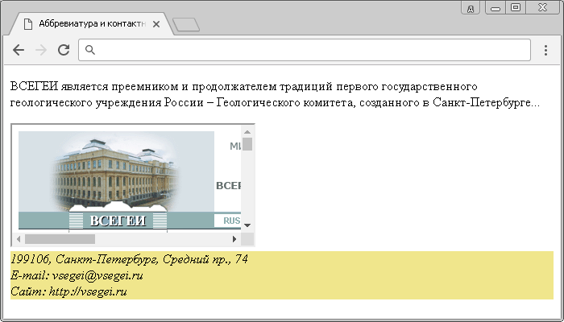

Тег <iframe> (HTML Inline Frame Element)- определяет встроенную в веб-страницу область, которая может отображать содержимое отдельно взятого документа (например, *.pdf), медиа-контента или другого веб-сайта в заданном пространстве. Содержимое внутри области существует независимо от окружающей сраницы.
Синтаксис для добавления фрейма:
<iframe src = "URL"> </iframe>, где src атрибут, который определяет местоположение документа или веб-сайта.
<!DOCTYPE html> <html> <head> <title>Пример использования элемента <iframe></title> </head> <body> <iframe name = "myframe" width = "665px" height = "265px" src = "https://tinypng.com"></iframe><br> <!-- в атрибуте src указываем абсолютный адрес сайта, который хотим открыть во фрейме --> <a href = "https://tinypng.com" target = "myframe">TinyPng</a> <!-- указываем, что ссылка откроется во фрейме --> <a href = "moscow.jpg" target = "myframe">Moscow</a> <!-- задаем относительный путь к изображению и имя фрейма, где оно откроется --> <a href = "paris.jpg" target = "myframe">Paris</a> <!-- задаем относительный путь к изображению и имя фрейма, где оно откроется --> <a href = "london.jpg" target = "myframe">London</a> <!-- задаем относительный путь к изображению и имя фрейма, где оно откроется --> </body> </html>
В этом примере мы:
Результат нашего примера:
HTML тег <abbr>(HTML Abbreviarion Element) определяет аббревиатуру или акроним. Маркировка сокращений являетс полезной информацией для браузеров, систем перевода и поисковых машин, для пользователя применения этого элемента не видимо.
Как правило, тег <abbr> применяется совместно с глобальным атрибутом title, для отображения полного описания аббревиатуры пользователю при наведении.
HTML тег <adress> - определяет контактную информацию (автор / владелец) документа или статьи. Если элемент <adress> находитс внутри тега <body>, то представляет контактную инфу для контактную информацию для документа, а если назодится внутри элемента <article> (статья), то он представляет контактную инфу для этой статьи.
Текст внутри элемента <adress>, как правило, отображается курсивом. Элемент не должен использоваться просто для описания почтового адреса, если он не является частью контактной информации. Элемент, чеще всего, используют с другой информацией в элементе <footer>(нижний колонтитул или "подвал" сайта).
пример использования:
<!DOCTYPE html>
<html>
<head>
<title>Аббревиватура и контактная информация</title>
</head>
<body>
<p><abbr title ="ВСЕРОССИЙСКИЙ НАУЧНО-ИССЛЕДОВАТЕЛЬСКИЙ <!-- добавляем аббревиатуру с глобальным атрибутом title -->
ГЕОЛОГИЧЕСКИЙ ИНСТИТУТ им. А.П.КАРПИНСКОГО">ВСЕГЕИ/abbr- является преемником и продолжателем традиций первого государственного геологического учреждения России —
Геологического комитета, созданного в Санкт-Петербурге...</p>
<iframe src = "http://vsegei.ru"></iframe<добавляем фрейм с сайтом института>
<adress style "background-color:khaki"> 199106, Санкт-Петербург, Средний пр.,74</br><
E-mail: vsegei@vsegei.ru</br>
Сайт:http://vsegei.ru/ru/ </adress>
</body>
</html>
